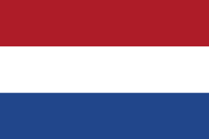
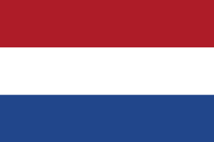

Benjamins
Benjaminsteam van WRC Te Werve
Bij de Benjamins (8-9 jaar) maken kinderen de overstap naar full-contact rugby. Dit betekent dat ze naast passen en rennen ook leren tackelen en scrummen. De focus ligt op techniek, samenwerking en sportiviteit, waarbij respect voor teamgenoten en tegenstanders centraal staat. Dit is de fase waarin spelers echt ervaren hoe dynamisch en uitdagend rugby kan zijn.

Wedstrijden & trainingen
De Benjamins trainen op dinsdag en donderdag van 18:00 tot 19:00, met aandacht voor de basisvaardigheden en de introductie van 3-mans uncontested scrums. Er wordt geoefend op veilig tackelen en het spelen in teamverband. Tweemaal per jaar organiseren we een gratis rugbyclinic, zodat nieuwe spelers laagdrempelig kunnen kennismaken met de sport.
-
Ma
-
Di
Training18:00
19:00Veld 3
-
Wo
-
Do
Training18:00
19:45Veld 1
-
Vr
-
Za
-
Zo